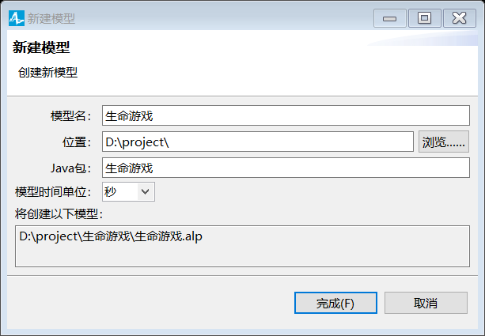
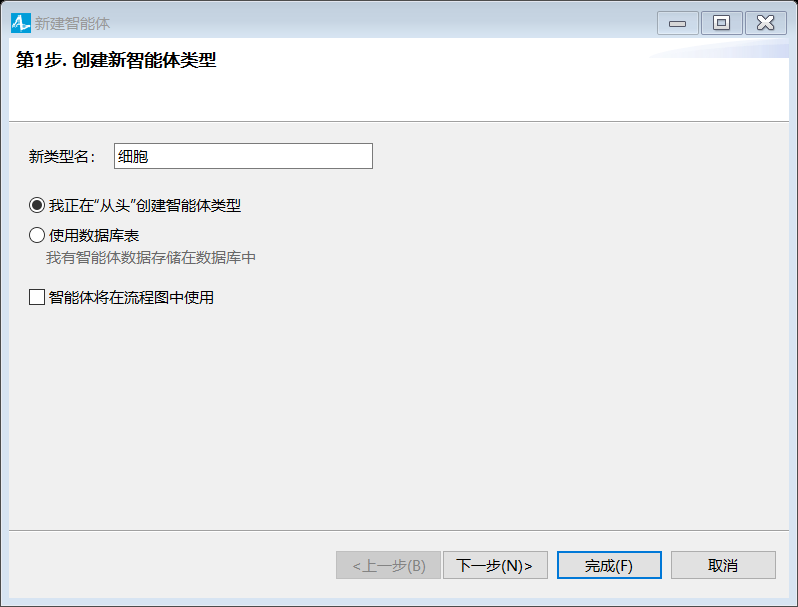
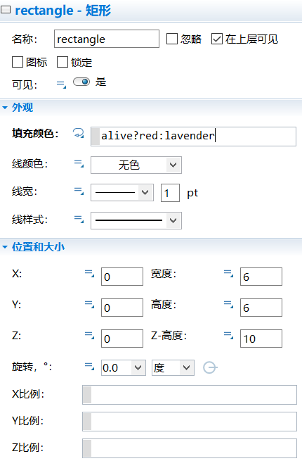
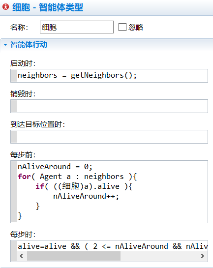
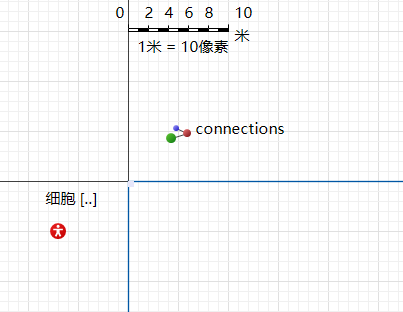
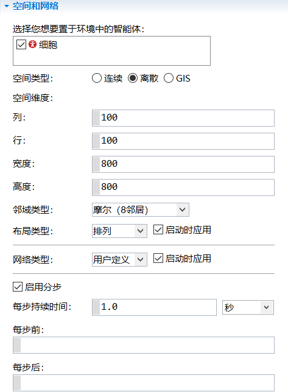
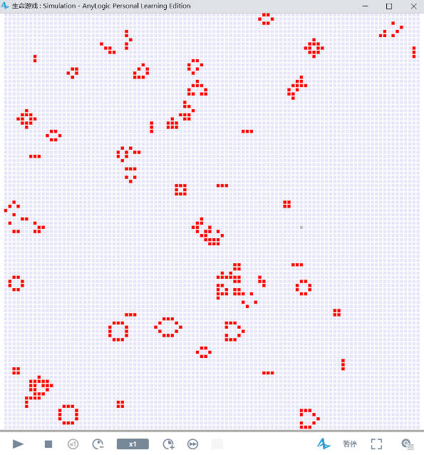
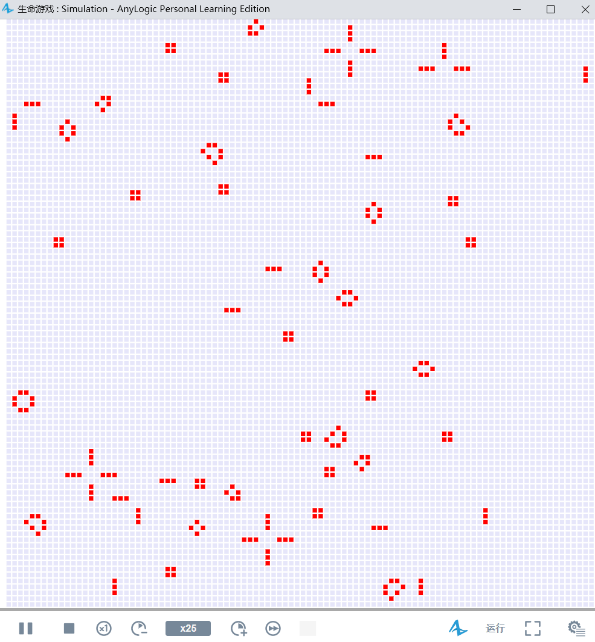

【仿真】生命游戏
条评论生命游戏又称元胞自动机，是一种时间、空间、状态都离散，空间相互作用和时间因果关系为局部的网格动力学模型，具有模拟复杂系统时空演化过程的能力。使用Anylogic来复现经典的元胞自动机只需要简单的几个步骤。
一、建立模型
1、在工具栏点击新建模型按钮，更改模型名为“生命游戏”，选择合适的存储位置。

二、建立细胞智能体
1、在工程视图中右键模型，选择“新建/智能体类型”，输入新类型名为“细胞”，并单击完成。

2、从智能体面板中拖入三个变量元素，分别命名为：
- alive：类型为boolean，初始值为randomTrue( 0.1 )。
- neighbors：类型为Agent[]，即为智能体群。
- nAliveAround：类型为int。
3、设置细胞图标，从演示面板中拖入矩形元素到坐标原点位置，设置其高度和宽度为6。在细胞属性中的外观部分点击填充颜色旁的)图标，使其变为，在编辑框中输入代码alive?red:lavender，用于表示细胞的存活状态，红色代表存活，灰色代表死亡。其具体设置如下图所示：

4、设置细胞的行动规则，点击细胞图的空白部分，在细胞智能体属性视图的行动部分输入如下图所示的代码：

启动时：
1 | neighbors = getNeighbors(); |
（其中getNeighbors()函数只有在离散空间中才能使用）
每步前：
1 | nAliveAround = 0; |
（每步前用于统计每个细胞周边存活的细胞个数）
每步时：
1 | alive=alive && ( 2 <= nAliveAround && nAliveAround <= 3 ) ||nAliveAround == 3; |
（这里的代码就是元胞自动机的基本运行规则，即当每个存活的细胞周边有2个或3个细胞存活时该细胞才会继续存活，每个死亡的细胞周边有三个细胞时，其才会新生）
5、设置细胞的互动规则，在细胞智能体的属性视图的高级部分中，设置点击时执行的代码alive = !alive;，这样在模型运行的过程中就能够改变细胞的生存状态，具体设置如下图所示：
三、在Main中设置仿真环境
1、从工程面板中拖入细胞智能体类型，放在Main图中的第三象限，这样智能体类型的图标在仿真中就不会出现，在其属性视图中设置其为智能体群，初始智能体数为10000。

2、点击Main图中的空白部分，在其属性视图的空间和网络部分中设置相关参数空间类型设置为离散，空间维度中行、列设置为100，宽度和高度设置为800，领域类型摩尔（8邻居），布局类型设置为排列，网格类型设置为用户定义，并启用分布，每步持续时间设置为1秒。具体设置如下图所示：

3、设置窗口的大小，点击Main图中的蓝色方框，设置其宽度高度为800，具体如下图所示：
4、运行并观察模型。


发现模型最终都趋于稳定状态，这也是元胞自动机的一种特性。